Guía paso a paso para enseñarle la app de prueba al dueño o a la dueña.
SOLO PARA VOS · no se la enseñés al cliente
1Qué vendemos, en 1 frase
Una app sencilla para el celular donde los clientes de Los Coco ven la pizarra del día, apartan mesa y piden para llevar, y todo le llega al dueño ordenadito por WhatsApp.
No es para cambiar cómo cocinan. Es para que la gente no llegue “a ciegas” y no tenga que esperar de pie.
Abrí el enlace en Safari (no en Facebook ni en WhatsApp).
Tocá el botón Compartir (el cuadrito con flecha, abajo).
Elegí “Agregar a inicio” y después “Agregar”.
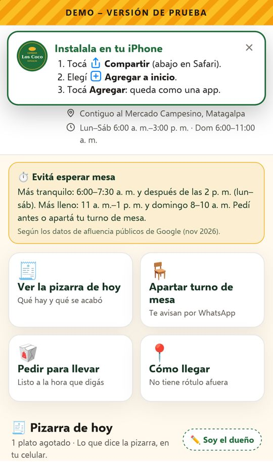
En iPhone la app misma te dice los 3 pasos.
Cómo instalarla en Android
Abrí el enlace en Chrome.
Si sale el botón “Instalar app”, tocalo. Si no sale, tocá los 3 puntitos ⋮ arriba a la derecha y elegí “Instalar app” o “Agregar a pantalla principal”.
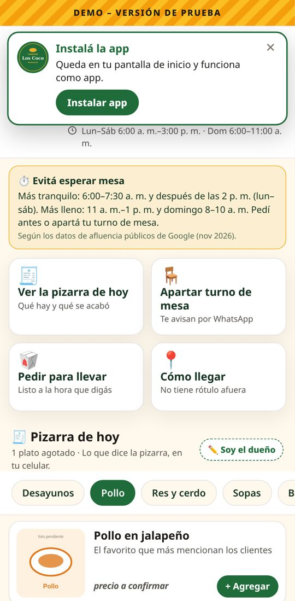
Botón “Instalar app”.
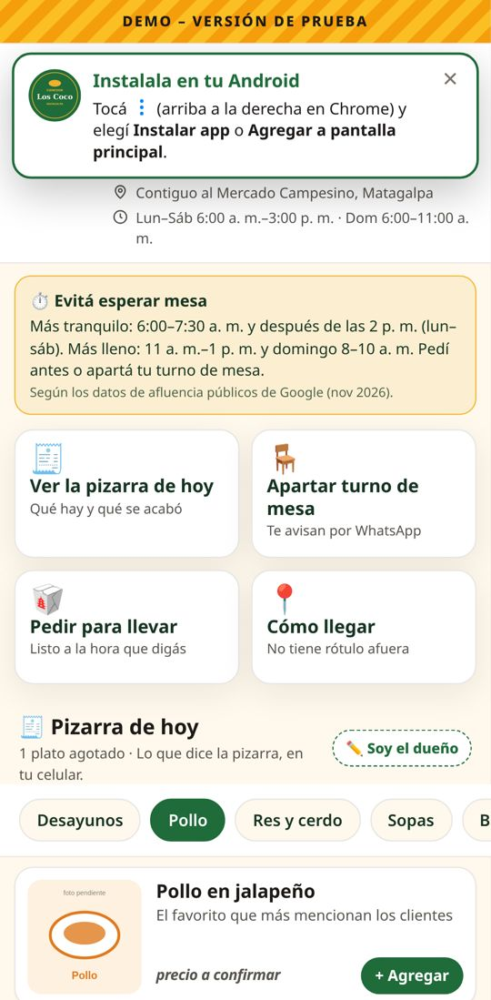
Si no sale: menú ⋮.
Si la abrís desde WhatsApp o Facebook, la app te va a decir “Abrí esta demo en Chrome/Safari”. Hacele caso.
La mejor hora para visitar
Según los datos públicos de Google, el comedor está más tranquilo después del almuerzo:
✅ Martes o miércoles, de 2:00 a 2:30 p. m.
Otra opción: lunes, viernes o sábado a las 2:00 p. m. (cierran a las 3:00 p. m., no llegués tarde).
Evitá:
De 11:00 a. m. a 1:00 p. m. cualquier día: está lleno, la gente espera mesa.
Domingo: de 8 a 10 a. m. es lo más lleno de la semana y cierran a las 11:00 a. m.
Tip: pedí un café o un fresco y pagalo como cualquier cliente. Fijate en la pizarra de la caja y en cómo dan el papelito de la cuenta. Así hablás con conocimiento.
3Cómo presentarte
Saludá con calma y preguntá: “Buenas tardes, ¿me podría decir con quién puedo hablar, con el dueño o la encargada?”
Si está ocupado, decí: “No se preocupe, ¿a qué hora le queda mejor? Son 3 minutitos.” Anotá la hora y volvé.
Cuando te atienda: tu nombre, que trabajás con Juan, y que hoy no le venís a cobrar nada, solo a enseñarle algo.
Tené el celular ya abierto en la app antes de empezar a hablar.
Tratalo de usted. Hablá despacio, sin palabras técnicas (no digás “PWA”, “link”, “app web”; decí “la aplicación”, “el enlace”).
4Qué decir, palabra por palabra (90 segundos)
0:00 – 0:15 · Saludo
“Buenas tardes, mucho gusto, soy [tu nombre]. Trabajo con Juan, hacemos aplicaciones sencillas para negocios de aquí. Hoy no le vengo a cobrar nada, solo a enseñarle algo que hicimos pensando en su comedor. ¿Me regala un minuto y medio?”
0:15 – 0:30 · Lo bueno
“Su comedor tiene muy buena fama. En Google tiene 4.3 estrellas con más de 580 opiniones, y la gente dice que las tortillas hechas al momento y el nacatamal son de lo mejor.”
0:30 – 0:55 · Lo que dicen los clientes
“Pero en esas mismas opiniones la gente repite tres cosas. Uno: que siempre está lleno y hay que esperar mesa, sobre todo al mediodía y el domingo en la mañana. Dos: que no saben qué hay ni cuánto cuesta hasta llegar a la caja; un cliente escribió que ‘es una rifa cuando tenés que pagar en caja, vas a ciegas’. Y tres: que cuando se acaba un plato, se tacha en la pizarra y el cliente se da cuenta ya estando aquí.”
0:55 – 1:20 · Enseñar
(Enseñale tu celular con la app abierta.)
“Mire, esta es una app de prueba con su pizarra. El cliente ve lo que hay hoy. Si se acaba el nacatamal, usted toca aquí y le sale ‘Agotado’. El cliente puede apartar turno de mesa o pedir para llevar a una hora, y el pedido le llega a usted ordenado por WhatsApp, con un código para la caja. Ya no hace falta el papelito.”
1:20 – 1:30 · Invitación
“¿Quiere que le llegue un pedido de prueba a su propio WhatsApp ahorita? Son dos minutos.”
Si te dice que sí, pasá al paso 5. Si te dice que no tiene tiempo, preguntá qué día le queda mejor y anotalo.
5Cómo hacer que el dueño la pruebe
A) Que la abra en SU celular
Pedile que abra la cámara y apunte al QR impreso. Que toque el enlace que aparece.
Si tiene iPhone: que la abra en Safari → Compartir → “Agregar a inicio”.
Si tiene Android: Chrome → “Instalar app” o menú ⋮ → “Instalar app”.
Decile: “Ya le quedó como una app más, con su ícono”.
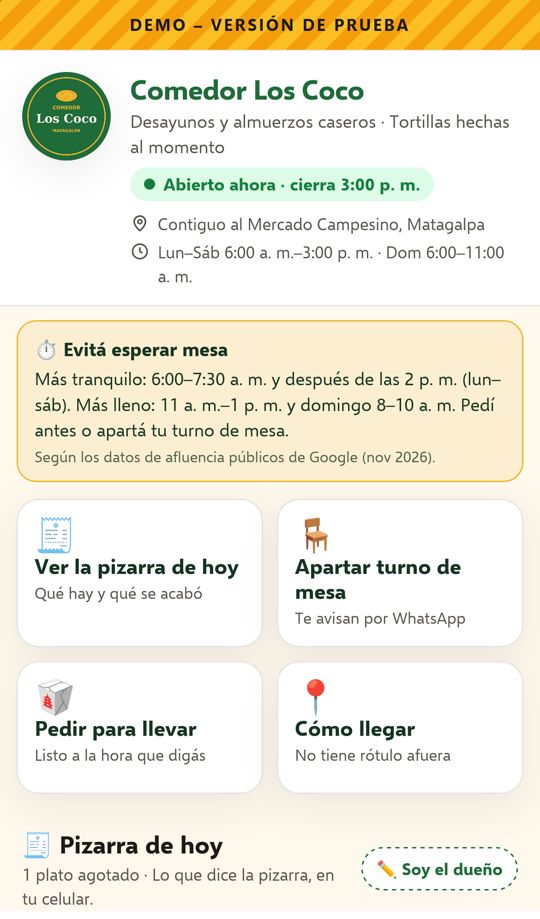
Así se ve al abrirla: abierto/cerrado, mejor hora y 4 botones grandes.
B) Activar el “Modo dueño” (para que el pedido le llegue a él)
Bajá hasta el final de la app y tocá “Probar como dueño”.
Que escriba su número de WhatsApp (8 dígitos) y toque “Guardar y probar”.
Arriba sale una cinta verde: “Modo dueño · pedidos a +505 …”. Listo.
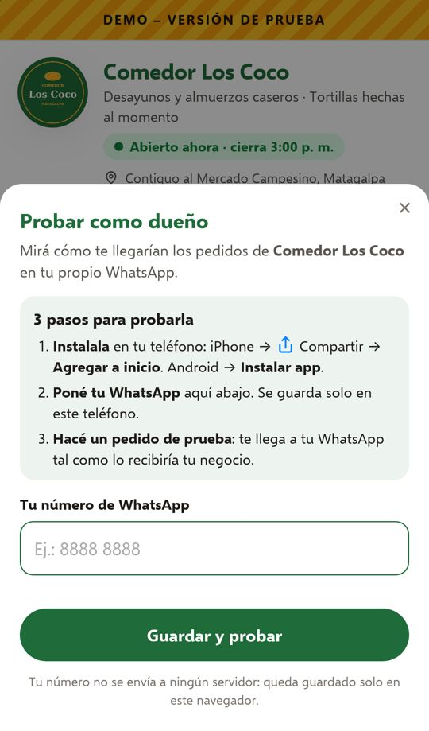
Escribe su número.
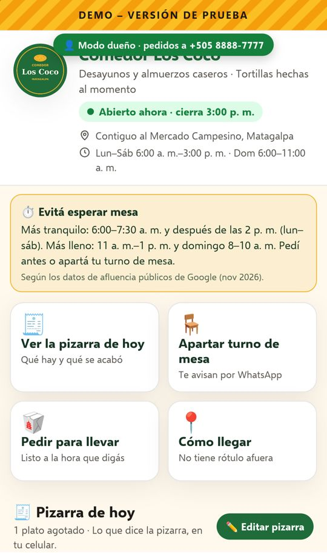
Cinta verde = activo.
Su número queda guardado solo en su celular. No se manda a ningún lado.
C) Hacer un pedido de prueba juntos
Tocá “Ver la pizarra de hoy” y agregá un plato (por ejemplo Nacatamal → + Cerdo).
Tocá “Ver pedido”, poné un nombre y elegí una hora.
Tocá “Enviar pedido por WhatsApp”. Se abre WhatsApp con el pedido escrito: que lo envíe.
¡Le llega a su propio WhatsApp! Enseñale el código (LC-…) que el cliente dice en caja.
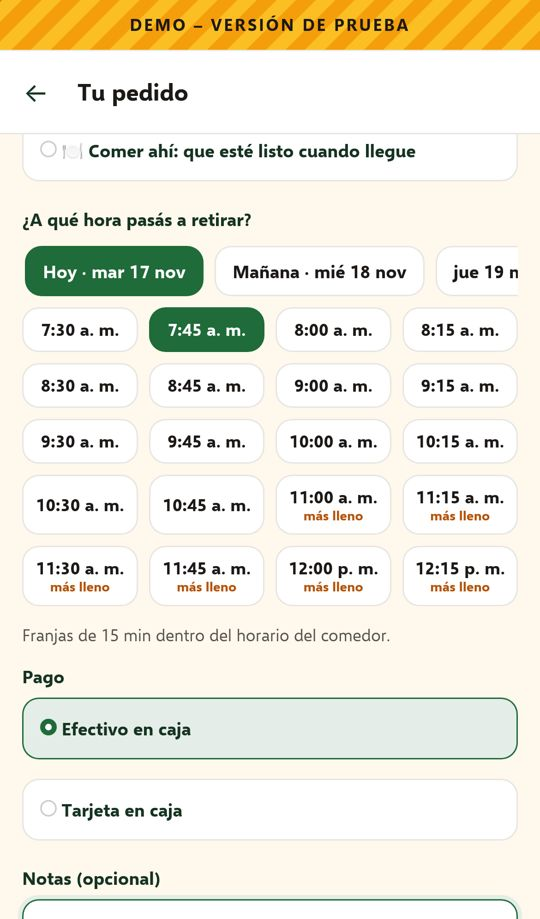
El cliente elige la hora.
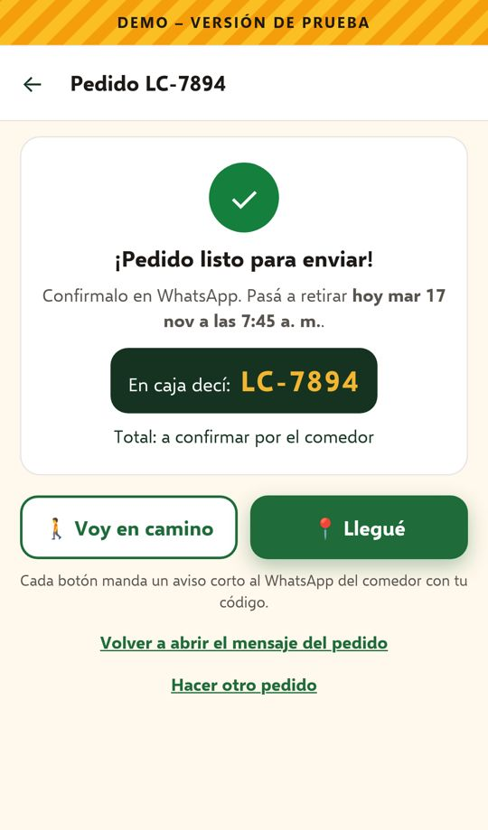
Código para la caja.
D) Enseñale a marcar “Agotado”
En la pizarra tocá “✏️ Editar pizarra” (o “Soy el dueño”).
Tocá el botón verde “Hay” de un plato: se pone rojo, “Agotado”.
Tocá “Listo”: el plato sale tachado y nadie lo puede pedir.
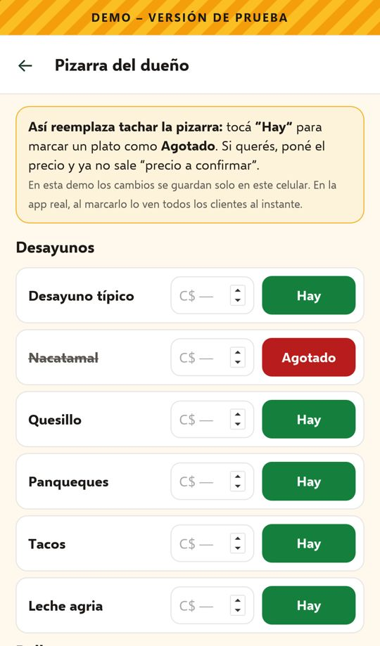
Un toque = agotado.
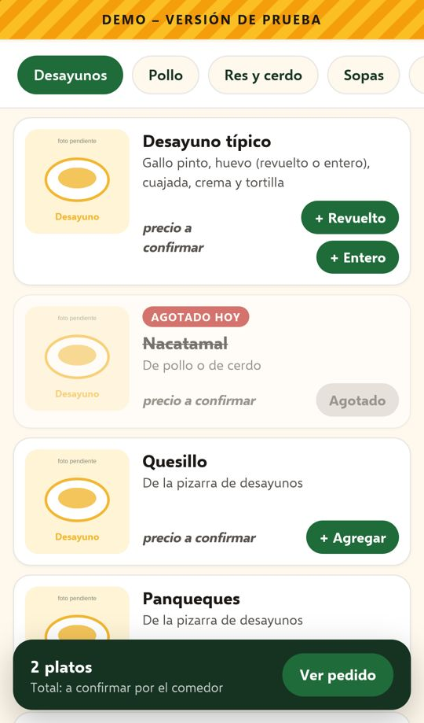
Así lo ve el cliente.
Decile la verdad: “En esta prueba, el cambio se ve solo en este celular. En la app de verdad, lo ven todos los clientes al instante”.
E) Turno de mesa
Tocá “Apartar turno de mesa”: personas, cuándo llega y si prefiere abajo o arriba. Le llega al WhatsApp y el comedor le responde cuando la mesa esté lista.
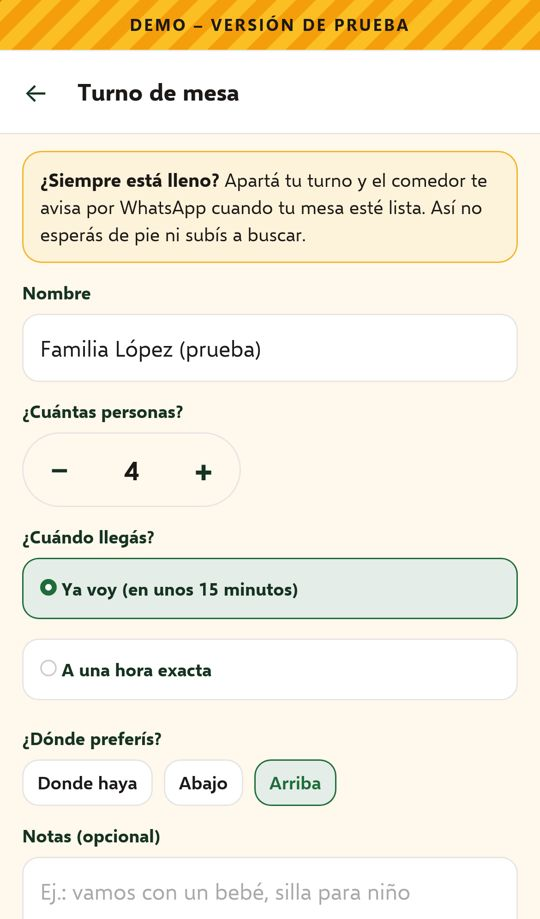
Pedir turno.
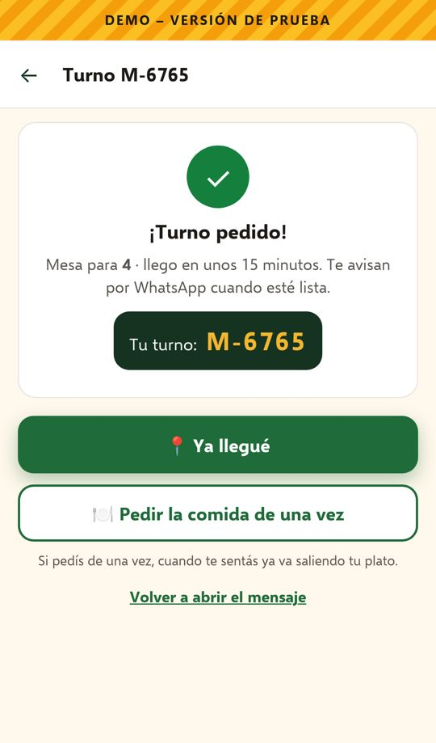
Turno enviado.
Al terminar, si quiere, tocá “Modo dueño activo · cambiar número” → “Quitar mi número”. O dejásela así para que la siga probando.
6Si te dice…
“Ya tengo WhatsApp.”
“¡Qué bueno! Esto usa su mismo WhatsApp. Lo que cambia es que el pedido le llega ordenado: qué plato, a qué hora y con código. No tiene que estar preguntando ni escribiendo papelitos.”
“No sé de tecnología.”
“No necesita. Usted solo toca ‘Agotado’, como cuando tacha la pizarra. Lo demás le llega al WhatsApp como un mensaje normal. Juan se lo deja todo listo.”
“Está caro.” / “¿Cuánto cuesta?”
“Eso lo ve directamente con Juan, según lo que usted necesite. Yo hoy solo vengo a enseñársela. ¿Le parece si Juan le explica?”
No des ningún precio (mirá la sección 8).
“Lo voy a pensar.”
“Claro, con toda confianza. Se la dejo instalada en su celular para que la vea con calma. ¿Qué día le puedo volver a visitar, o prefiere que Juan le escriba?”
Anotá el día y la hora que te diga.
“¿Y si se cae el internet?”
“El comedor sigue trabajando igual que siempre, con su pizarra y su caja. Si el cliente ya la abrió antes, la app se puede ver aunque la señal esté mala, pero para mandar un pedido el cliente sí necesita internet, igual que para mandar cualquier WhatsApp.”
“Ya estoy en PedidosYa.”
“Está bien, esto no lo tiene que quitar. Esto es para sus clientes de siempre: ven la pizarra, apartan mesa y le piden directo a su WhatsApp, sin pasar por otra empresa. Los detalles de cómo funciona el cobro se los explica Juan.”
7Qué NO decir ni prometer
No des precios ni “más o menos cuánto sale”.
No prometás más clientes ni más ventas en números.
No digás que otros comedores ya la usan ni inventés casos o testimonios.
No prometás fechas de entrega, delivery, pagos con tarjeta en la app ni cosas que la demo no hace.
No digás que la demo ya es oficial ni que ya recibe pedidos reales. Es una prueba.
No critiqués el local (calor, rótulo, parqueo). Hablá solo de lo que la app ayuda.
No le pidás contraseñas, datos del banco ni que te preste su celular sin él presente.
No compartás el QR ni el enlace en grupos o redes sociales.
No tomés fotos de los clientes ni del local sin permiso.
Sí podés decir: “Es una prueba hecha para su comedor”, “le llega a su WhatsApp”, “Juan le explica los detalles”, “lo que dicen sus clientes en Google”.
8Precios
[Pendiente: Juan define]
NO des precios hasta que Juan los confirme. Si te preguntan, decí: “Eso se lo explica Juan directamente.”
9Cómo cerrar y qué anotar
Al final preguntá:
“¿Le gustaría que Juan le prepare la versión de verdad, con sus platos y su número?”
Anotá esto (antes de irte)
Nombre de quien te atendió y su cargo (dueño, dueña, encargada).
El nombre exacto del comedor como ellos lo dicen (“Los Coco”, “Doña Coco”…).
El número de WhatsApp del negocio solo si te lo da y te dice que Juan le puede escribir.
Quién marcaría “Agotado” en la app (el dueño, la cajera…).
Qué le gustó más: pizarra, turno de mesa o pedido para llevar.
Qué le preocupa (la objeción, con sus palabras).
Si tiene iPhone o Android, y si se la dejó instalada.
Respuesta: Sí / Lo piensa / No, y el próximo paso con fecha y hora.
10Si dice que sí
Dale las gracias y decile: “Juan le va a escribir hoy mismo para los detalles.”
No acordés precios ni fechas. Eso lo hace Juan.
Avisale a Juan de una vez por WhatsApp (a su número de siempre) con este mensaje:
✅ Juan, Comedor Los Coco (Matagalpa) dijo que SÍ.
Me atendió: [nombre y cargo]
WhatsApp del negocio (con permiso): [número]
Le gustó: [pizarra / turno de mesa / para llevar]
Le preocupa: [lo que dijo]
Celular: [iPhone / Android], ¿quedó instalada?: [sí/no]
Próximo paso: [día y hora]
Si dice “lo pienso” o “no”, igual avisale a Juan con lo que anotaste. Un “no” también sirve para aprender.